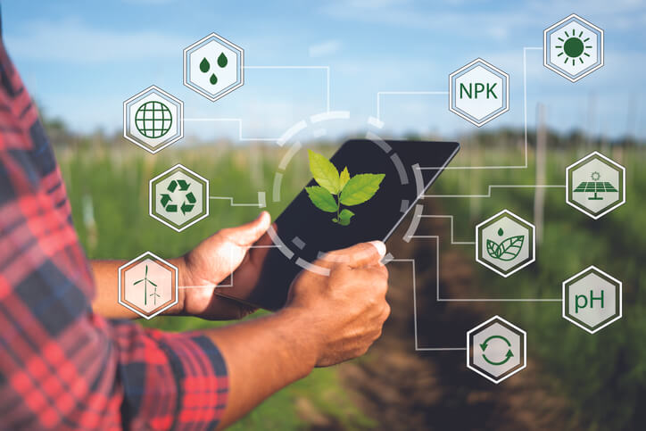

agro 5.0
.jpg)
A maioria dos estudiosos definem o agro 5.0 como a conexão tecnológica de ponta a ponta do setor produtivo, ou seja, é uma agricultura mais conectada do começo ao fim da safra, que utiliza tecnologias de sensores trabalhando de forma integrada como caminho para produzir mais, melhor e com menos custos. A tecnologia vem avançando e transformando os mais diversos mercados, porém, no agro, essa evolução está chegando a passos largos. Muitos acreditavam que o setor teria uma evolução mais lenta em conectar todas as pontas, a pandemia do coronavírus, que tomou conta do mundo no ano passado (2020) e ainda está presente na nossa rotina, entretanto, acelerou esse processo e hoje os especialistas já apontam a presença do agro 5.0 na maioria das propriedades até 2022.
As agtechs e seu papel na disseminação do agro 5.0  Assim como qualquer avanço tecnológico, o agro 5.0 avança aos poucos, com empresas pioneiras no setor que aos poucos vêm crescendo e ganhando respaldo no mercado. Essas empresas são chamadas de agtechs, empresas de tecnologia focadas no agronegócio, categoria onde a NetWord Agro se encaixa. A importância das agtechs nesse cenário de mudanças e transformações é fundamental, visto que por serem essencialmente empresas de tecnologia, elas trazem para o agro uma dinamicidade e capacidade de adaptação mais do que necessária. Quais as principais transformações que o agro 5.0 vai trazer para o campo? Machine learning e dados Não há dúvidas de que os dados são a moeda do futuro, e esse paradigma também se aplica no agro. Com tecnologias preditivas e monitoramentos constantes, as agtechs estão criando bancos de informações incríveis sobre como está e para onde vai a produção no campo. Máquinas autônomas Máquinas controladas por computador, que não exigem necessariamente um operador já existem, entretanto, ainda são pouco usuais aqui no Brasil. Esse cenário, porém, tende a mudar, principalmente devido às tecnologias embarcadas nesse